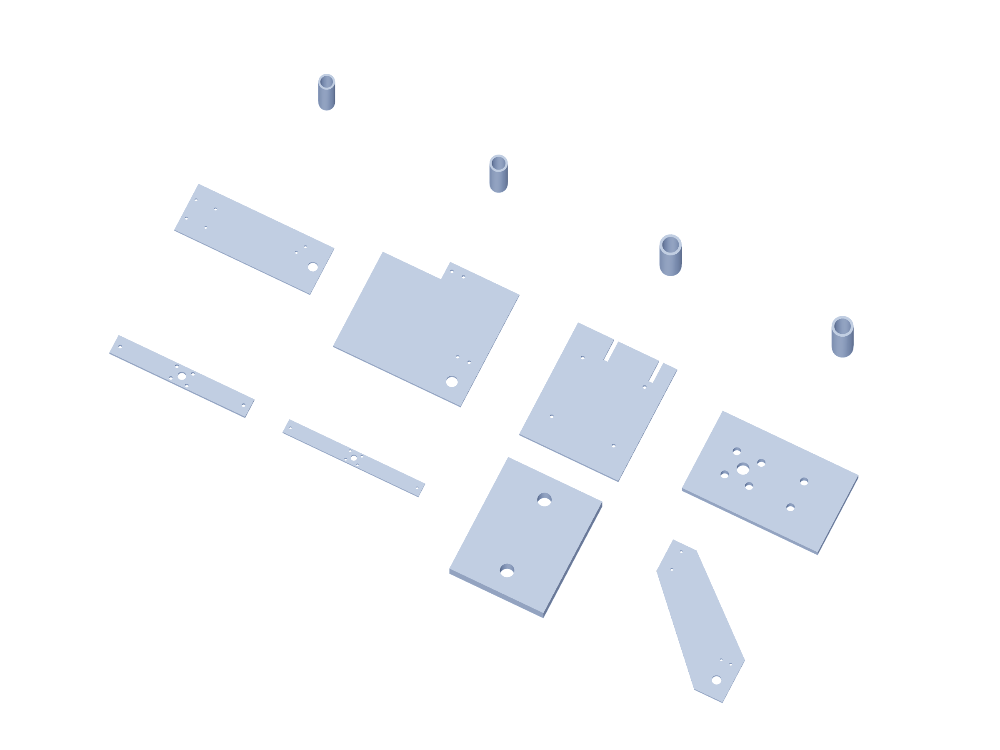

Kit / fabrication12 / 179
Metal kit / 6
6061 aluminum dimensions are finished blank sizes. Bought angles remain angles; shafts, bearings and guide blocks are separate purchased parts.

| Part | Qty | Finished blank / mm |
|---|---|---|
angular-load-lever | 1 | 220 × 30 × 6.35 |
hub-proof-lever | 1 | 300 × 30 × 6.35 |
hub-proof-load-saddle | 1 | 40 × 50 × 6.35 |
yaw-base-web | 2 | 230 × 250 × 6.35 |
pitch-base-web | 2 | 280 × 100 × 6.35 |
roll-base-web | 2 | 220 × 203.1 × 6.35 |
roll-base-anchor | 1 | 160 × 190 × 6.35 |
angular-output-bridge | 3 | 100 × 60 × 6.35 |
pitch-web-left-spacer | 4 | 8 × 8 × 31.35 |
pitch-web-right-spacer | 4 | 8 × 8 × 28.65 |
angular-output-spacer | 12 | 8 × 8 × 23.65 |
crash-force-outer-spacer | 16 | 8 × 8 × 23.8291 |
Use gun-positioner-drill-templates.pdf at actual size. The 3D STEP and registered projections govern formed angles and hub faces.